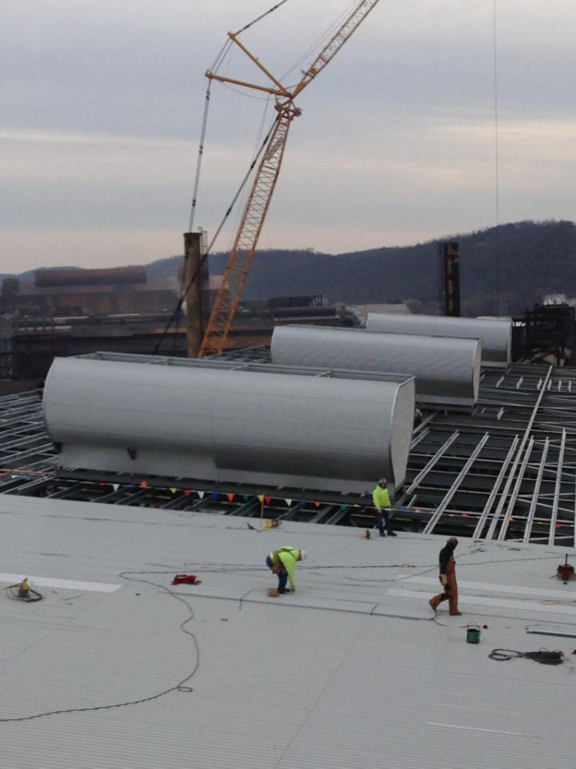

Air-Therm Inc Ventilator Program (2018)
Part of Internship at Air-Therm Inc, a Montreal-based company designing and manufacturing natural ventilators for industrial plants around the world (above picture belonging to Air-Therm shows the natural ventilators on top of a plant in Lake Charles). Coded C++ and MATLAB programs to calculate the flow rate out of ventilator given its dimensions, indoor and outdoor temperature ratio and discharge coefficient for vent opening.